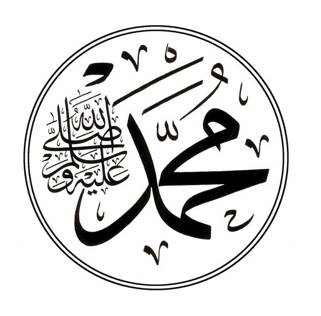

Muhammad ﷺ
The Prophet of Allah

Muhammad written in arabic calligraphy
The life of the Messenger of Allahﷺ (the Madinan period):
- 2 AH - The Battle of Badr
- 3 AH - The Battle of Uhud
- 5 AH - The Battle of al-Khandaq (the Trench)
- 6 AH - The treaty of al-Hudaybiyyah
- 7 AH - The campaign of Khaybar
- 7 AH - Umrat al-Qada (The compensatory umrah)
- 8 AH - The campaign of Mu'tah
- 8 AH - The conquest of Makkah
- 8 AH - The battle of Hunayn
- 9 AH - The campaign of Tabuk
- 9 AH - The year of delegations
- 9 AH - Abu Bakr leads the people in Hajj
- 10 AH - The Prophet'sﷺ Hajj (The Farewell Pilgrimage)
- 11 AH - The death of the Messengerﷺ